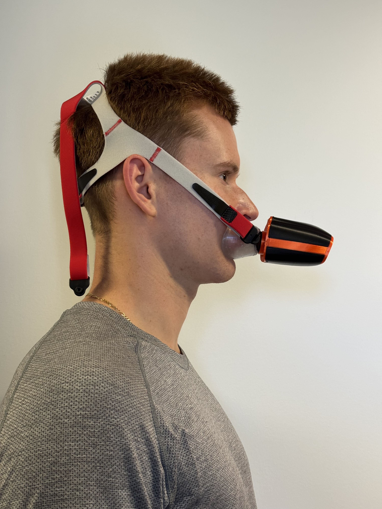
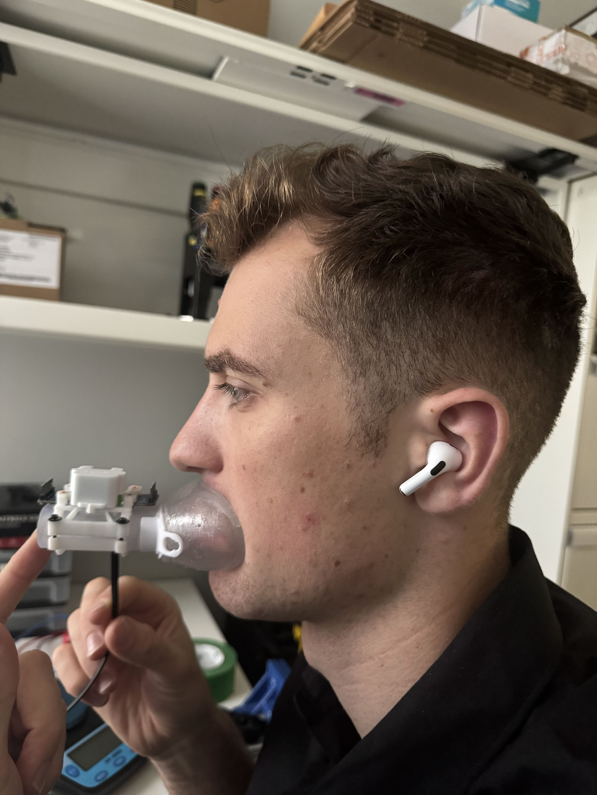

Lab-grade data, out of the lab.
A metabolic cart can tell you almost everything about your aerobic engine. The problem is that almost no one can get to one. AeroCardia exists to close that gap.
Started by an engineer and a cardiologist.
AeroCardia was founded by a biomedical engineer and a cardiologist with more than a decade of clinical experience between them. They kept seeing the same thing from opposite sides: the measurements that best describe cardiorespiratory fitness — oxygen uptake, ventilation, gas exchange — were locked inside hospital and university labs.
Athletes were making training decisions on heart rate and feel. Clinicians were watching a metric that predicts longevity go unmeasured in almost everyone. So the team set out to build a sensor small enough to wear on a run, accurate enough to trust, and simple enough that you would actually use it.

Fitness you can measure is fitness you can improve.
VO2 max is one of the strongest predictors of how long and how well people live — and one of the few that responds quickly to training. Our goal is simple: make it a number you can watch move, season after season, without booking a lab.
What makes AeroCardia different.
Heart and lung
The only consumer device that reports both cardiac and respiratory measurements from a single session — not just heart rate, and not just breathing.
Built on clinical data
Our estimates are developed and checked against reference metabolic testing, with patent-pending methods and AI-enabled analytics.
Wellness first
AeroCardia is designed for training and general wellness. It is not a medical device and does not diagnose disease — and we are deliberate about that line.
Tested every day, on real athletes.
The device you see on this site is a working prototype. Every iteration is validated on the bike and the treadmill against benchtop analysers, then refined — sensor placement, seal, weight, the feel of the strap.

Backed by builders and clinicians.
 McGill Dobson Centre for Entrepreneurship
McGill Dobson Centre for Entrepreneurship
 Garage&Co
Garage&Co
 Vitruvius Venture Studio
Vitruvius Venture Studio
 Marika Zelenka Roy Innovation Prize
Marika Zelenka Roy Innovation Prize
Recipient of the Marika Zelenka Roy Innovation Prize.
Talk to the team.
Press, partnerships, coaching enrolment or a question about the science — we read everything.
AeroCardia · 4200 Dorchester Boulevard W, Suite 310, Westmount, Quebec, Canada